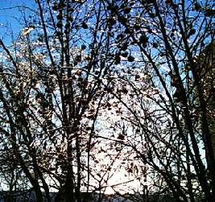
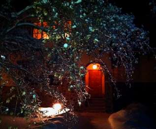

ОПАСНАЯ КРАСОТА
Не всякая красота спасает мир. Та, которая его разрушает, тоже бывает чудо как хороша. Всё, всё, что гибелью грозит, для сердца смертного таит неизъяснимы наслажденья.
Смертоносные извержения вулканов, молниевые разряды, смерчи и падающие метеориты неописуемо прекрасны. Всего этого я, слава богу, воочию никогда не видел (и надеюсь, не увижу), но 25 декабря 2010 года я, как многие жители тех же широт, был свидетелем зрелища лютой вредности и редкостной красоты.
На землю пролился обильный зимний дождь, и всё покрылось льдом. Падали хрустальные электрические провода, вызывая перебои энергии и транспортные катастрофы. С крыш свисали убийственно монументальные сосульки — стало опасно ходить по улицам.
Но знаете что я вам скажу? Оно того стоило. Ледяной мир с переливающимися радугой стеклянными ветками и застывшим в воздухе звоном я запомню на всю жизнь. Ходил и фотографировал до тех пор, пока одна из волшебных веток не обломилась под собственной тяжестью и не свалилась мне на шапку (чуть ли не с этого вот дерева).
Ветка была увесистая. Я лично убедился, что красота — страшная сила, и убрался подобру-поздорову в дом. Снимать из окна.
Таким день 25 декабря для меня и остался: опасным и красивым.
«Красота есть не только страшная, но и таинственная вещь», — написал Ф.М. Достоевский, а он в таких вещах разбирался.